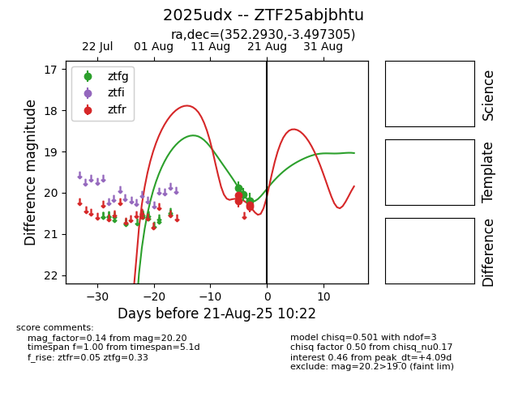

Target 2025udx at 2025-08-21 11:20, see:
FINK: fink-portal.org/ZTF25abjbhtu
Lasair: lasair-ztf.lsst.ac.uk/objects/ZTF25abjbhtu
ALeRCE: alerce.online/object/ZTF25abjbhtu
TNS: wis-tns.org/object/2025udx
YSE: ziggy.ucolick.org/yse/transient_detail/2025udx
alt names
ZTF25abjbhtu (ztf,alerce)
2025udx (tns,yse)
coordinates:
equatorial (ra, dec) = (352.2930,-3.49730)
galactic (l, b) = (79.6123,-59.26369)
photometry
last ztfg=20.20, ztfr=20.33
4 ztfg, 4 ztfr detections
